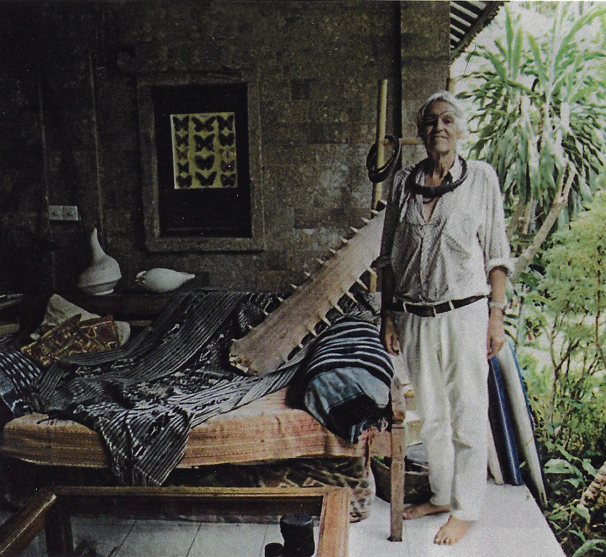

Code Exercise 5: Magazine Layout
The Globetrotters

Lawrence Blair
For more than 40 years, this English-born, Bali-based anthropologist and explorer
has been participating and leading marine expeditions throughout the Indonesian
archipelago. The second time he visited, back in 1972, was with his now late brother
Lorne and some funding from Ringo Starr. Their mission? To make a documentary
series-the groundbreaking Ring of Fire-that included encounters with cannibal
headhunters and the funeral ceremony for the last king of the Toraja people,
who believe their ancestors were descended from the stars. These days much of
his time is split between hosting private yacht charters (he once did a s
ubmersible dive in Raja Ampat Islands with Oxford professor Richard Dawkins)
and lecturing on National Geographic and Silversea cruises. But this fall Blaft
will be aboard the eight-cabin Kudantl Explorer-an experienced expedition ship
whose crew know exactly where the best surf spots are-as it sails to the Banda
Islands, his all-time favorite castaway destination.

Opprah Winfrey
She might be considered the godmother of many things: talk shows, self-help,
female empowerment-the list goes on. And now one of the nation's richest
selfmade women, once dubbed the queen of all media, is. The official godmother
of a cruise ship, Holland America's 2,650-passenger Nieuw Statendam. When she
launched the ship with a one-off Girls Getaway cruise to the Caribbean earlier
this year, it sold out in minutes, barely longer than the standing ovation after
her rousing speech at last year's Golden Globes. Now guests get a series of
programs inspired by 0, The Oprah Magazine, from meaningful meditation and
energizing movement sessions by the pool to O-approved transformational
videos and an Oprah Reading Room, a nod to her wildly influential book club.
Winfrey has been working with Holland America for a few years, curating a series
of Adventure of Your Life voyages, most recently a trip to Alaska with experts
including "wisdom teacher" Shefali Tsabary and sound-bathing therapist Sara
Auster. Cruising, like politics, television, and social media, has entered
Oprah's orbit.